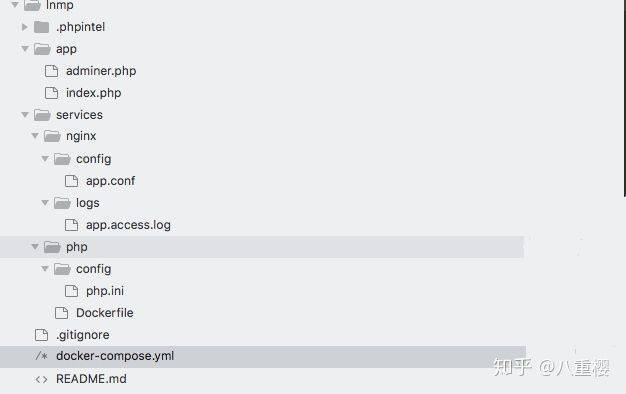
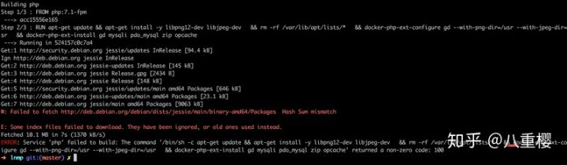
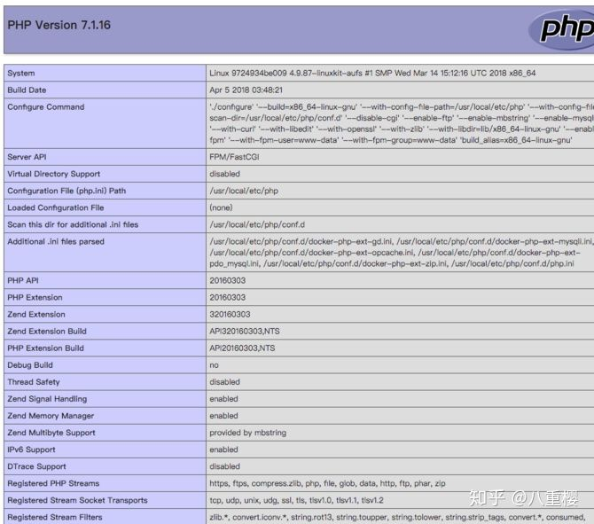
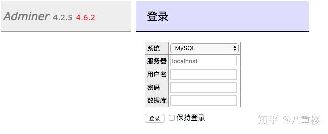

原文连接:https://www.cnblogs.com/a609251438/p/12098931.html
这篇文章介绍的内容是关于Mac上通过docker配置PHP开发环境，有着一定的参考价值，现在分享给大家，有需要的朋友可以参考一下
更多PHP相关知识请关注我的专栏PHP
安装docker
关于MAC上安装docker网上有很多文章介绍，这里我就不在做描述了，顺便提一句，建议使用阿里云或Daocloud提供的加速器。
使用docker-compose配置开发环境
一般一个基本的PHP开发环境包括PHP、PHP-FPM、WEB服务器、MySQL数据库，另外还会有Redis或memcache等相关NoSQL服务。我主要是通过docker-compose来配置服务。
什么是docker-compose
docker-compose是一个通过YAML文件来定义项目，项目中包含单个或多个容器服务。一般配置文件名为：docker-compose.yml。
目录结构
你可以按自己的喜好组织项目，下面是我用的方法，app 目录放的是应用的代码，services 下面是创建服务需要用的东西，有些服务需要我们自己去创建镜像，在一个 Dockerfile 文件里说明一下你想要的镜像是什么样的。在创建自定义镜像的时候也可能需要用到一些额外的文件，比如一些配置文件，一般在创建镜像的时候会把这些配置文件复制到镜像里。

MySQL
mysql是数据服务，先去给这个服务添加一个数据卷，然后在这个服务里使用一下这个数据卷，把数据库生成的数据放到这里，这样即使我们删除容器，数据服务里的数据也会保留在主机上，下回创建容器的时候，可以继续使用已有的数据。在 volumes 下面，添加一个名字是 mysql 的数据卷：
volumes: mysql: driver: local
然后再去添加一个名字是 MySQL的服务，指定一下服务使用的镜像，这个镜像我们也可以用自己创建的 Dockerfile 去创建一下，或者你不打算定制镜像，也可以直接使用现成的，这里我用了 mysql:5.7 这个镜像。注意最好设置具体要使用的版本。
这个镜像里有一些环境变量，我们可以在定义服务的时候去设置一下它们的值，这里我设置了 root 用户的密码，要创建的数据库，用户名，还有密码，你可以 根据自己的需求去修改这些变量的值。
在 mysql 服务上我用了 volumes 为它指定了一个 MySQL 数据卷，挂载的位置是容器的 /var/lib/mysql ，这是存储数据库的默认的地方。因为我本机安装了MySQL服务，3306端口被占用了，所以指定6306端口映射到容器的3306
version: "3"services: mysql: image: mysql:5.7 environment: MYSQL_ROOT_PASSWORD: "root" MYSQL_DATABASE: "app" MYSQL_USER: "app" MYSQL_PASSWORD: "123456" volumes:
- ./services/mysql/data:/var/lib/mysql ports:
- "6306:3306"
测试
在我们的 compose 文件里现在已经有了一个叫 mysql 的服务，在命令行工具下，进入到项目所在的目录，执行：
docker-compose up
然后你就会在终端上看到安装镜像和启动容器的过程，然后另开一个命令终端，执行：
docker-compose execmysql bash
进入mysql容器中，然后进入数据库检查一下：
mysql -uroot -pshow databases;
+--------------------+| Database |
+--------------------+| information_schema |
| app |
| mysql |
| performance_schema || sys |
+--------------------+5 rows in set (0.03 sec)
这个时候我们发现mysql容器已经可用了
php
定义一个解释 php 的服务，我打算自己创建这个服务用的镜像，所以用了 build，而不是 image 。我告诉了 docker 自己要创建的这个镜像要使用的那个 Dockerfile 文件的位置（./services/php/Dockerfile）。
volumes 下面是服务用的数据卷，我把 compose 文件所在目录下的 app 这个目录，挂载到了容器的 /www/html/app 这个位置上了。这样我可以直接修改项目的代码，然后立即看到结果；同时由于本机9000端口被占用，指定9090端口映射到容器的9000端口
php: build: context: ./services/php dockerfile: Dockerfile volumes:
- ./app:/www/html/app ports:
- "9090:9000"
Dockerfile
构建 php 服务的镜像用的 Dockerfile 是 ./services/php/Dockerfile。FROM，设置了一下这个镜像要基于哪个镜像去创建，我用了 php:7.1-fpm 这个官方提供的镜像。RUN 了几行命令，主要是去安装一些软件包，比如一些额外的 php 扩展。在安装这些扩展之前 ，你需要先安装扩展依赖的一些其它的软件包，这里的 libpng12-dev，libjpeg-dev，就是 gd 这个 php 扩展需要的软件包。然后我又 COPY 了配置文件到镜像里面。
FROM php:7.1-fpm
RUN apt-get update && apt-get install -y libpng12-dev libjpeg-dev \
&& rm -rf /var/lib/apt/lists/* \
&& docker-php-ext-configure gd --with-png-dir=/usr --with-jpeg-dir=/usr \
&& docker-php-ext-install gd mysqli pdo_mysql zip opcache
COPY ./config/php.ini /usr/local/etc/php/conf.d/php.ini
php服务中遇到的坑
PHP这个镜像中软件是使用的Debian的源，因为众所周知的缘故会导致镜像安装不成功，如图所示：

这个时候我们就需要更换源了，第一次换成了中科大的源，然后发现不行，第二次更换成了阿里云的源，完美完成镜像安装，修改过后的Dockerfile如下：
FROM php:7.1-fpm
RUN sed -i 's/deb.debian.org/mirrors.aliyun.com/g' /etc/apt/sources.list \
&& apt-get update && apt-get install -y libpng12-dev libjpeg-dev \
&& rm -rf /var/lib/apt/lists/* \
&& docker-php-ext-configure gd --with-png-dir=/usr --with-jpeg-dir=/usr \
&& docker-php-ext-install gd mysqli pdo_mysql zip opcache
COPY ./config/php.ini /usr/local/etc/php/conf.d/php.ini
使用sed命令搜索软件源文件，把Debian域名修改为阿里云域名
php.ini
自定义的 php 配置。把你想要的 php 配置放到这个文件里，重新 build 镜像，然后再次启动 php 服务的时候会用新的镜像重新创建容器，这样配置就会生效了。
memory_limit = 256Mpost_max_size = 100Mupload_max_filesize = 100M
Nginx
用 image 指定了要使用的镜像，ports 设置了发布的端口号，让主机上的 8000 对应容器的 80 。depends_on 可以设置服务的依赖，我让 nginx 服务依赖之前定义的 php ，这样会先启动 php ，然后再启动 nginx 。
另外我又用了 volumes 自己设置了一个数据卷，让主机上包含 nginx 配置文件的目录，对应容器里的 nginx 服务的配置文件目录，这样我就可以直接在本机上修改 nginx 的配置文件，然后重新启动一下 nginx 服务，配置就可以生效了。这种方法适用在开发环境上，因为修改了配置不需要重新 build 镜像，在生产环境中，你需要自己 build 这个 nginx 镜像，把想要的配置直接复制到镜像里去。在开发阶段有的时候我们需要查看nginx的日志，然后我配置了日志目录映射到容器，最后一个地址是代码目录
nginx: image: nginx:1.12.2 ports:
- "8000:80" depends_on:
- php volumes:
- ./services/nginx/config:/etc/nginx/conf.d
- ./services/nginx/logs:/etc/nginx/logs/
- ./app:/www/html/app
app.conf
./services/nginx/config/app.conf，这是一个最基本的 nginx 配置文件，设置了应用的 root 是在 /www/html/app 这里，我们已经把主机上的 app 目录挂载到了容器里的 /www/html/app 这个地方。
注意这条指令：fastcgi_pass php:9000; 这里的 php 是我们定义的 php 这个服务的名字，在 compose 文件里定义的服务，它们之间可以使用服务的名字相互进行沟通，因为 docker 内置了 DNS 功能。
server { listen 80; server_name localhost; root /www/html/app; # access_log /etc/nginx/logs/app.access.log main;
location / {
index index.html index.htm index.php; autoindex on;
# include /usr/local/etc/nginx/conf.d/php-fpm;# include /usr/local/etc/nginx/conf.d/pathinfo.conf;
if (!-e $request_filename) { ###一级目录下
rewrite ^/(.*)$ /index.php/$1 last; ###域名下的二级目录
#rewrite ^/html/(.*)$ /uuabc_home/index.php/$1 last;
}
} location = /info { allow 127.0.0.1; deny all;
} location ~ \.php(.*)$ { # comment try_files $uri =404; to enable pathinfo
# try_files $uri =404;
fastcgi_pass php:9000; fastcgi_index index.php; fastcgi_split_path_info ^((?U).+\.php)(/?.+)$; fastcgi_param SCRIPT_FILENAME $document_root$fastcgi_script_name; fastcgi_param PATH_INFO $fastcgi_path_info; fastcgi_param PATH_TRANSLATED $document_root$fastcgi_path_info; include /etc/nginx/fastcgi_params;
} # error_page 404 /404.html;
# error_page 403 /403.html;}
启动
经过上面几个步骤，我们已经把PHP开发最基本的搞好了，下面我们准备看下成果。
在 app 目录下创建一个 index.php ，内容是：
<?php
phpinfo();
进入到项目下面，执行：
docker-compose up
打开浏览器访问http://localhost:8000/，结果如图所示：

连接数据库
在app目录有一个adminer.php文件，这个文件是一个类似于PHPmyadmin的数据库管理工具，比较轻量级，访问http://localhost:8000/adminer.php，如图所示：

在表单服务器选项中填写mysql,用户名root,密码填写安装MySQL服务时的root密码，然后登陆进去，如图所示：

然后我们就可以愉快的管理数据库了。
总结
至此，我们对PHP基本开发环境已经安装好了，如果需要安装比如Redis或memcache等服务的话，可以自行度娘，自己动手。
更多PHP相关知识请关注我的专栏PHP